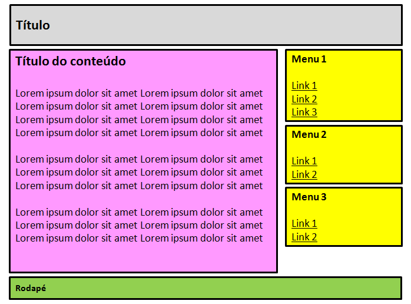
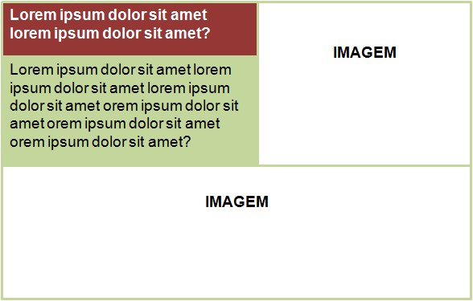

Layout CSS - parte 2
Nesta aula veremos como utilizar as propriedades CSS na criação de uma página com duas colunas utilizando layout fixo e layout flexível. Nos dois casos, o objetivo será deixar a página com o layout da figura abaixo:
O código HTML a seguir será a nossa marcação base:
<body>
<div id="tudo">
<header>
</header>
<article>
</article>
<nav>
</nav>
</div>
</body>
Layout Fixo
Vamos adotar os seguintes requisitos para nossa página com layout fixo:
- Página centralizada na janela do navegador.
- Área de conteúdo com largura igual a 760px.
- Coluna principal (elemento article) posicionada à direita e com 560px de largura.
- Coluna de navegação (elemento nav) posicionada à esquerda e com 180px de largura.
- Espaço entre as colunas igual a 20px (760px - 560px - 180px).
Aqui cabe uma observação: a propriedade width se refere à área de conteúdo do elemento de bloco, não incluindo margens, bordas e afastamento (padding). Portanto, devemos subtrair o valor de padding desejado das larguras das colunas. Adotando os respectivos valores de 8px e 4px para os afastamentos de article e nav, teremos os seguintes resultados:
- Largura da coluna principal: 560px - (8px + 8px) = 544px
- Largura da coluna de navegação: 180px - (4px + 4px) = 172px
Para posicionar os elementos article e nav no sentido horizontal, basta utilizar a propriedade float. Aqui, temos duas opções: utilizar o valor left para os dois elementos e utilizar margens laterais para ajustar o espaço entre eles, ou usar os valores left para article e right para nav. Vamos utilizar a segunda opção por esta exigir uma menor quantidade de configurações.
O código a seguir apresenta os estilos necessários ao nosso layout fixo. O resultado pode ser visualizado no exemplo 1. Observe que a largura dos elementos não é alterada quando a janela é redimensionada ou quando o usuário aumenta o tamanho padrão de fonte.
#tudo{
width: 760px;
margin: auto;
padding: 0;
}
header{
background-color: silver;
}
article{
float: right;
width: 544px;
padding: 8px;
background-color: pink;
}
nav{
float: left;
width: 172px;
padding: 4px;
background-color: yellow;
}
Layout flexível
Para migrar o exemplo para um layout flexível, teremos que adotar unidades relativas nas larguras dos elementos. Assim, para que a página acompanhe o redimensionamento da janela, iremos adotar medidas em porcentagem. Vamos partir das medidas anteriores para determinar os novos valores:
- Largura de article: 544 ÷ 760 = 72%
- Largura de nav: 172 ÷ 760 = 23%
Também teremos que utilizar porcentagem na largura do elemento #tudo. No entanto, queremos evitar colunas muito largas no caso de janelas largas e margens entre #tudo e a janela no caso de janelas estreitas. Para evitar as margens, podemos utilizar o valor de 100% na largura do elemento, e para evitar as colunas largas basta adotar um valor para a propriedade max-width. Por tratar-se de um layout flexível, devemos adotar uma unidade relativa para a largura máxima de #tudo. O uso da unidade em garante que o elemento acompanhará o tamanho da fonte utilizada no conteúdo. Para determinar o valor de max-width, basta converter a largura em px, adotada para #tudo no layout fixo, para em. Como a maioria dos navegadores adota 16px como tamanho padrão de fonte, adotaremos 16px = 1em. Assim, a largura máxima de #tudo será igual a 47,5em (760 ÷ 16).
Lembre que 1em é igual ao tamanho de fonte definido para o elemento. Portanto, se um elemento usa um tamanho de fonte igual a 12px, este será o valor de 1em.
Para impedir que as colunas tornem-se muito estreitas, ocasionando em sobreposição ou quebra dos blocos, vamos adotar o valor de 35em para a propriedade min-width.
O código a seguir mostra as propriedades e os valores adotados para o nosso layout flexível. O resultado pode ser conferido no exemplo 2. Redimensione a janela do navegador durante a visualização para observar o comportamento do layout flexível.
#tudo{
width: 100%;
max-width: 47.5em;
min-width: 35em;
margin: auto;
padding: 0;
}
header{
background-color: silver;
}
article{
float: right;
width: 72%;
padding: 8px;
background-color: pink;
}
nav{
float: left;
width: 23%;
padding: 4px;
background-color: yellow;
}
Exercícios
1) Utilize as técnicas de layout flexível para escrever uma página de acordo com o layout exibido na figura abaixo.
2) Utilize as técnicas de layout fixo para escrever uma página de acordo com o layout exibido na figura abaixo. Insira figuras nos locais das caixas com o texto IMAGEM.
Referências
- SILVA, Maurício Samy. Construindo sites com CSS e (X)HTML: sites controlados por folhas de estilo em cascata. São Paulo: Novatec, 2008.